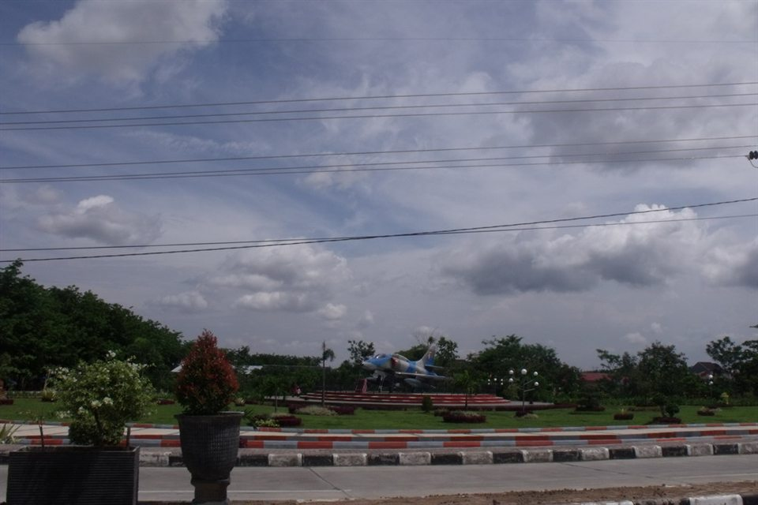
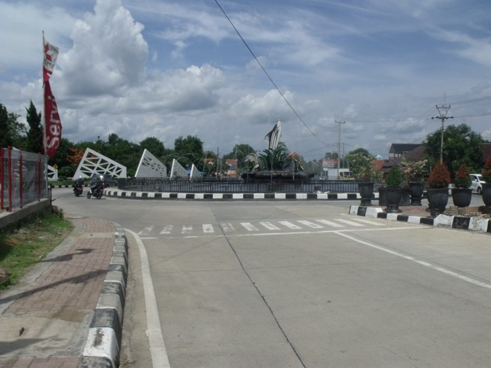

Taman kota
Taman Raharja
Jl. K.H. Abdul Halim, Kelurahan Munjul, Kecamatan Majalengka, Kabupaten Majalengka




Tentang destinasi
Taman Raharja merupakan ruang terbuka hijau di sekitar Bundaran Munjul. Jalur pejalan kaki dan taman di sekitar monumen pesawat menjadi tempat singgah di tengah kota.
Fasilitas
- Kantong parkir
- Musala
- Jalur pejalan kaki
- Ruang terbuka hijau
Informasi kunjungan
- Jam buka dan layanan
- Ruang publik. Periksa papan di lokasi untuk jam akses dan layanan.
- Harga
- Tarif kunjungan perlu dikonfirmasi di lokasi. Periksa juga ketentuan parkir.